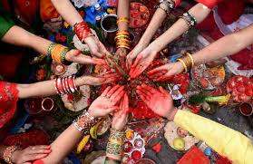
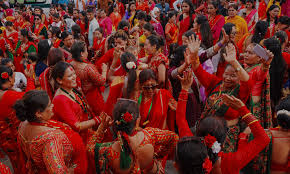

Nepali Culture Explorer
Nepali Culture Explorer💃 Haritalika Teej
हरितालिका तीज
तीज नारी शक्तिको निष्ठा, भक्ति, माइती-चेलीको आत्मीयता र रातो रङ्गको उमङ्गले भरिएको महान् सांस्कृतिक पर्व हो।
- पौराणिक आधार: माता पार्वती र भगवान् शिवको पावन मिलन
- मुख्य सन्देश: दाम्पत्य सुख, समर्पण, र माइती-चेलीको अटुट सम्बन्ध
- मुख्य आकर्षण: दर खाने परम्परा, निर्जला व्रत, शिव पूजा, र साङ्गीतिक लोकनृत्य
Visuals of Teej


Teej Music
१. तीजको पौराणिक इतिहास र कसरी सुरु भयो?
तीजको इतिहास माता पार्वती र भगवान् शिवको पौराणिक कथासँग जोडिएको छ:
- 'हरितालिका' शब्दको अर्थ: 'हरित' (हरण गरिएकी) र 'आलिका' (सखी/साथीहरू)। पार्वतीका पिता हिमालय पर्वतले उनको इच्छा विपरीत विष्णु भगवान्सँग विवाह गरिदिन खोजेपछि, पार्वतीका साथीहरूले उनलाई हरण गरेर (लुकाएर) एक घना जङ्गलमा लगेका थिए।
- कठोर तपस्या र कठोर व्रत: जङ्गलमा पार्वतीले बालुवाको शिवलिङ्ग स्थापना गरी अन्न-पानी त्यागेर कडा तपस्या गरिन्। पार्वतीको यो निष्ठा र समर्पणबाट प्रसन्न भई भगवान् शिवले उनलाई पत्नीको रूपमा स्वीकार गर्नुभयो।
- सुरुवात: पार्वतीले शिवलाई पतिको रूपमा पाएको त्यही खुसीको दिन (भाद्र शुक्ल तृतीया) लाई सम्झँदै हिन्दु नारीहरूले तीज मनाउने परम्परा सुरु भएको मानिन्छ।
२. तीजको मुख्य उद्देश्य र पौराणिक महत्त्व
- सद्भाव र दाम्पत्य जीवनको सुख: विवाहित महिलाहरूले पति र परिवारको सुस्वास्थ्य, दीर्घायु र सुखद् दाम्पत्य जीवनका लागि र अविवाहित महिलाहरूले सुयोग्य र निष्ठावान् जीवनसाथी पाउन यो व्रत बस्छन्।
- माइती र चेलीको मिलन: तीजको अर्को मुख्य उद्देश्य टाढा-टाढा रहेका दिदीबहिनी र माइती पक्षलाई एकै ठाउँमा भेला गराउनु हो। तीजको अघिल्लो रात 'दर' खाँदै चेलीहरूले आफ्ना दुःख-सुख साटासाट गर्छन्।
- आत्मानुशासन र शुद्धीकरण: तीजको निरहार व्रतले शारीरिक र मानसिक शुद्धता कायम राख्दै नारी शक्तिको दृढ सङ्कल्प र आत्मबललाई उजागर गर्छ।
तीज कसरी र कति दिन मनाइन्छ? (३ दिने यात्रा)
१. पहिलो दिन: दर खाने दिन (भाद्र शुक्ल द्वितीया)
तीजको अघिल्लो साँझ माइती वा आफन्तकोमा भेला भई मध्यरातिसम्म मीठा-मीठा परिकार (खिर, गुझिया, घिउ-लाटो, फलफूल आदि) खाइन्छ, जसलाई 'दर खाने' भनिन्छ। भोलिपल्टको कडा व्रतका लागि शरीरलाई ऊर्जा दिन र दिदीबहिनीहरू बीच दुःख-सुखका कुरा साटासाट गर्न यो दिन विशेष मानिन्छ।
२. दोस्रो दिन: तीजको मुख्य दिन र निर्जला व्रत (भाद्र शुक्ल तृतीया)
यो तीजको मुख्य दिन हो। महिलाहरू एकाबिहानै नुहाएर रातो, पहेंलो वा हरियो साडी र साउन-तीजका श्रृङ्गार (पोते, चुरा, धागो) मा सजिन्छन्।
- निरहार व्रत: दिनभर अन्न र पानीसमेत नपिई (निर्जला) निष्ठापूर्वक व्रत बसिन्छ।
- शिव-पार्वती पूजा: मन्दिर वा घरमा बालुवा/माटोको शिवलिङ्ग वा शिव-पार्वतीको मूर्ति बनाएर बेलपत्र, फूल र फलफूलले विधिवत् पूजा गरिन्छ।
- नाचगान र वेदनाका गीत: पशुपतिनाथ वा स्थानीय शिवालयहरूमा भेला भई माइतीको सम्झना, जीवनका सुख-दुःख र संस्कृति झल्किने तीजका लोकगीतमा रातभरिसम्म नाचगान गरिन्छ।
३. तेस्रो दिन: ऋषिपञ्चमी र पारण (भाद्र शुक्ल पञ्चमी)
गणेश चतुर्थीको भोलिपल्ट अर्थात् ऋषिपञ्चमीका दिन बिहानै ३६५ वटा दतिवनले दाँत माझेर, सप्तऋषि (कश्यप, अत्रि, भरद्वाज, विश्वामित्र, गौतम, जमदग्नि र वशिष्ठ) को पूजा गरिन्छ। पूजापछि तुलसीको मठमा जल चढाएर व्रतको औपचारिक पारण (विसर्जन) गरिन्छ।
✨ Teej's Most Beautiful Aspect
"तीजको सबैभन्दा सुन्दर पक्ष भनेको 'नारी शक्तिको समर्पण, माइती-चेलीको अटुट सम्बन्ध र आत्मअभिव्यक्ति' हो। कडा व्रत बस्दा पनि अनुहारमा देखिने निश्छल मुस्कान, रातो साडी र छमछम बज्ने चुराको तालमा मनका खुसी र वेदनाहरू गीतमा पोख्दै नाच्नु नै तीजको साँचो सौन्दर्य हो।"